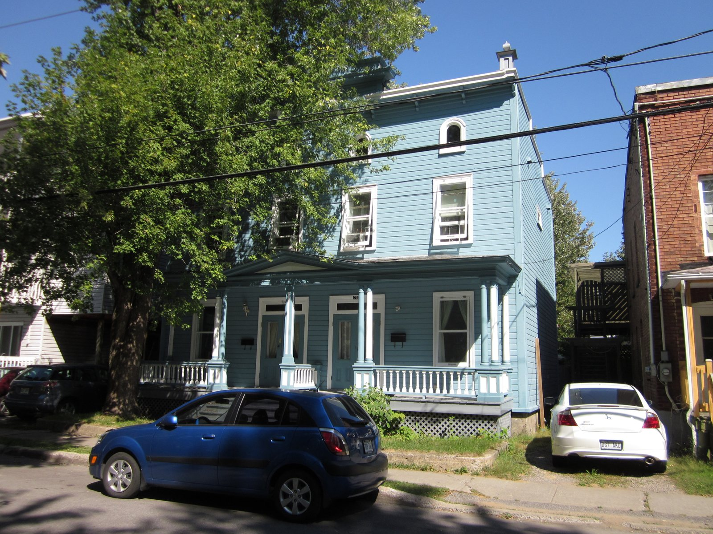

| Place | Local name | Phase years | Storeys | Roof | Window | Cladding | Garage |
|---|---|---|---|---|---|---|---|
| Charlesbourg (Trait-Carré) | Boomtown building Le bâtiment « Boomtown » | 1900 – 1945 | – | flat | vertical | wood-clapboard, clay-brick | – |
| Île d'Orléans | Boomtown house La maison Boomtown | 1900 – 1935 | 2 | flat-or-low-slope | vertical | wood, brick | – |
| Lévis | Boomtown house Boomtown | 1900 – 1945 | 1–2 | flat-or-low-slope | – | wood-clapboard, wood-shingle, asbestos-cement-tile | – |
| Québec City | Boomtown house and shop-house Boomtown | 1875 – 1930 | 1–2 | flat-or-low-slope | vertical | wood-clapboard, clay-brick, wood-shingle, asbestos-cement-shingle, metal | – |
| Saint-Lambert | Boomtown house with false mansard La maison Boomtown à fausse mansarde | 1875 – 1930 | 2 | false-mansard | vertical | clay-brick, roughcast, wood | none |
| Saint-Lambert | Boomtown house with crown (parapet or cornice) La maison Boomtown avec couronnement | 1875 – 1930 | 2 | flat | vertical | clay-brick, wood | none |
| Trois-Rivières | Boomtown house La maison Boomtown | 1907 – 1945 | 2 | flat-or-low-slope | vertical | clay-brick, wood-clapboard | none |


